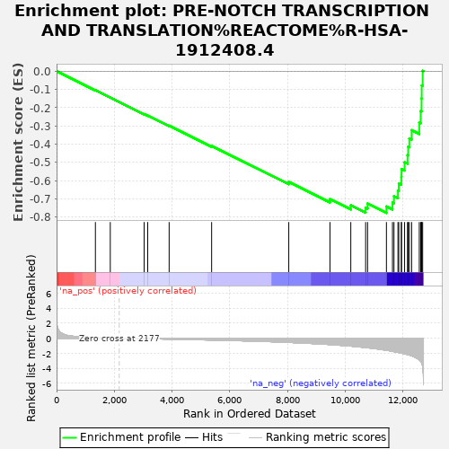
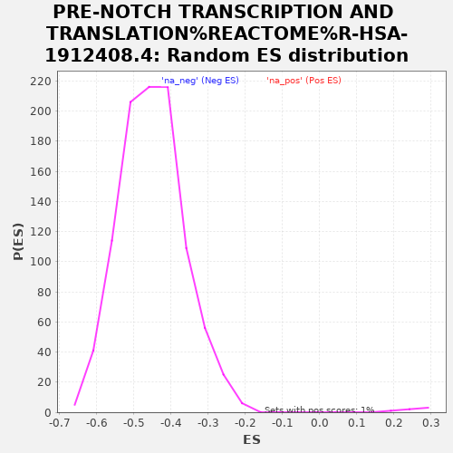

| | | Dataset | rankInfo |
| Phenotype | NoPhenotypeAvailable |
| Upregulated in class | na_neg |
| GeneSet | PRE-NOTCH TRANSCRIPTION AND TRANSLATION%REACTOME%R-HSA-1912408.4 |
| Enrichment Score (ES) | -0.77785045 |
| Normalized Enrichment Score (NES) | -1.7252773 |
| Nominal p-value | 0.0 |
| FDR q-value | 6.084026E-4 |
| FWER p-Value | 0.031 |
Table: GSEA Results Summary

Fig 1: Enrichment plot: PRE-NOTCH TRANSCRIPTION AND TRANSLATION%REACTOME%R-HSA-1912408.4
Profile of the Running ES Score & Positions of GeneSet Members on the Rank Ordered List
| SYMBOL | RANK IN GENE LIST | RANK METRIC SCORE | RUNNING ES | CORE ENRICHMENT | | 1 | SIRT6 | 1346 | 0.081 | -0.1043 | No |
| 2 | JUN | 1862 | 0.024 | -0.1443 | No |
| 3 | NOTCH1 | 3036 | -0.062 | -0.2354 | No |
| 4 | KAT2A | 3159 | -0.071 | -0.2435 | No |
| 5 | MOV10 | 3902 | -0.126 | -0.2992 | No |
| 6 | SNW1 | 5375 | -0.246 | -0.4098 | No |
| 7 | PRKCI | 8049 | -0.563 | -0.6082 | No |
| 8 | MAMLD1 | 9477 | -0.854 | -0.7020 | No |
| 9 | TFDP2 | 10199 | -1.053 | -0.7359 | No |
| 10 | AGO4 | 10713 | -1.249 | -0.7490 | Yes |
| 11 | AGO2 | 10781 | -1.277 | -0.7265 | Yes |
| 12 | NOTCH2 | 11434 | -1.613 | -0.7427 | Yes |
| 13 | TNRC6C | 11644 | -1.750 | -0.7210 | Yes |
| 14 | MAML1 | 11696 | -1.796 | -0.6859 | Yes |
| 15 | AGO1 | 11834 | -1.891 | -0.6554 | Yes |
| 16 | TFDP1 | 11862 | -1.913 | -0.6158 | Yes |
| 17 | E2F3 | 11951 | -1.977 | -0.5797 | Yes |
| 18 | AGO3 | 11957 | -1.982 | -0.5368 | Yes |
| 19 | RBPJ | 12064 | -2.079 | -0.4998 | Yes |
| 20 | MAML2 | 12165 | -2.175 | -0.4603 | Yes |
| 21 | MAML3 | 12188 | -2.198 | -0.4141 | Yes |
| 22 | CREBBP | 12228 | -2.234 | -0.3685 | Yes |
| 23 | TNRC6A | 12307 | -2.340 | -0.3236 | Yes |
| 24 | TNRC6B | 12573 | -2.883 | -0.2816 | Yes |
| 25 | RUNX1 | 12621 | -3.066 | -0.2185 | Yes |
| 26 | KAT2B | 12652 | -3.268 | -0.1496 | Yes |
| 27 | EP300 | 12657 | -3.299 | -0.0779 | Yes |
| 28 | TP53 | 12690 | -3.791 | 0.0022 | Yes |
Table: GSEA details [plain text format]

Fig 2: PRE-NOTCH TRANSCRIPTION AND TRANSLATION%REACTOME%R-HSA-1912408.4: Random ES distribution
Gene set null distribution of ES for PRE-NOTCH TRANSCRIPTION AND TRANSLATION%REACTOME%R-HSA-1912408.4